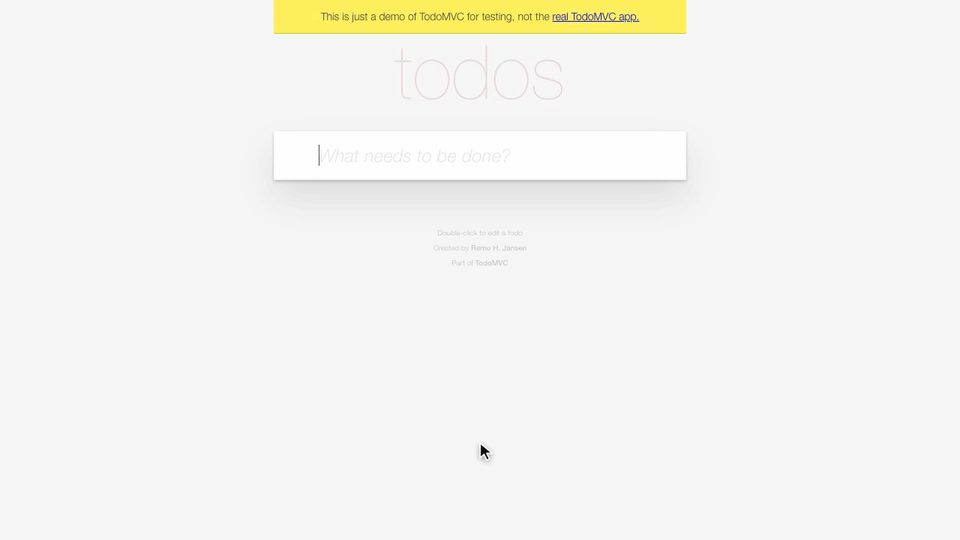
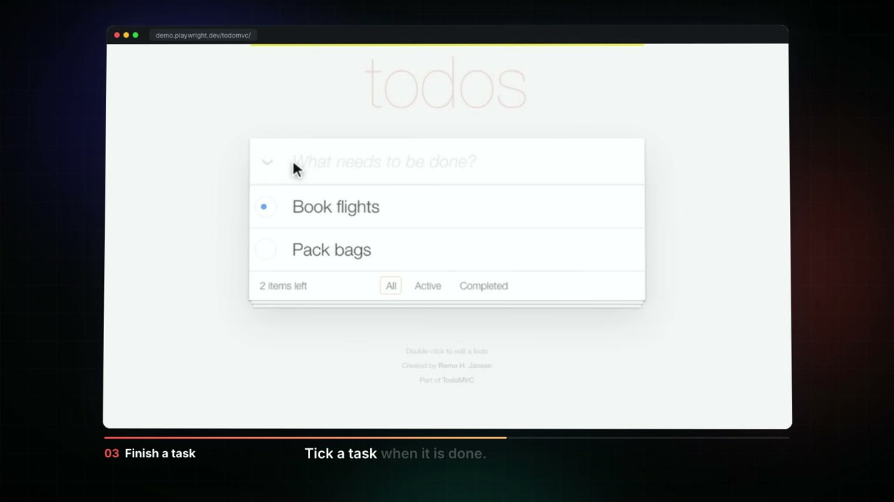
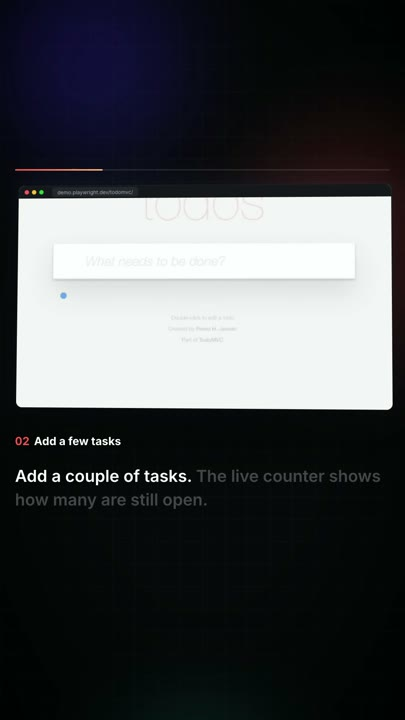
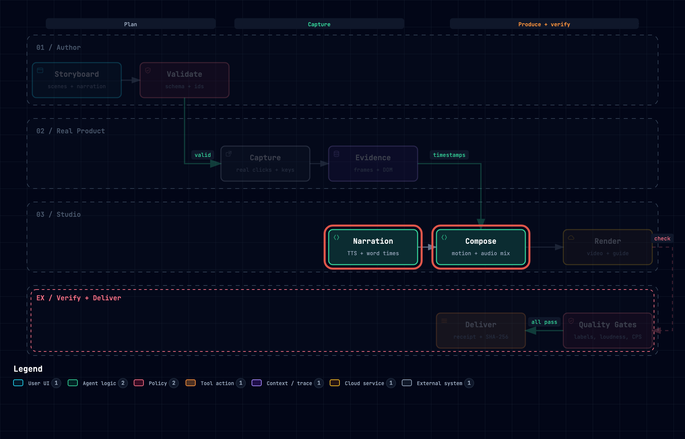

Tutorials that can't go stale. Write one storyboard. It clicks through your real product and delivers a guide, GIFs, and narrated videos, checked before they ship.
Add the marketplace, install the plugin, then run setup once. Setup adds Chromium and the Kokoro voice, which is about 1 GB and cached in ~/.cache/how-it-works.
/plugin marketplace add junixlabs/how-it-works /plugin install how-it-works@how-it-works /how-it-works:setup
Use How It Works to make a tutorial for https://demo.playwright.dev/todomvc: add two tasks, complete one, then filter to the completed list. Guide with GIFs, plus a narrated video, wide and vertical.
This is the architecture explainer that ships as the built-in demo. One storyboard and one command produced the diagram tour, the narration, the captions, and the guide. It was not trimmed or touched up afterwards.
architecture-explainer.jsonhiw demo ./out



A real browser runs every step. The outputs replace the last delivery only when every gate passes, and the run writes a receipt with SHA-256 hashes. These are the gates from the release example: